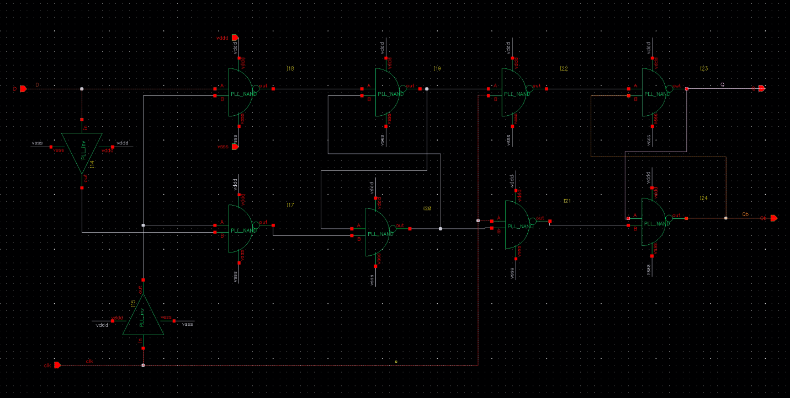
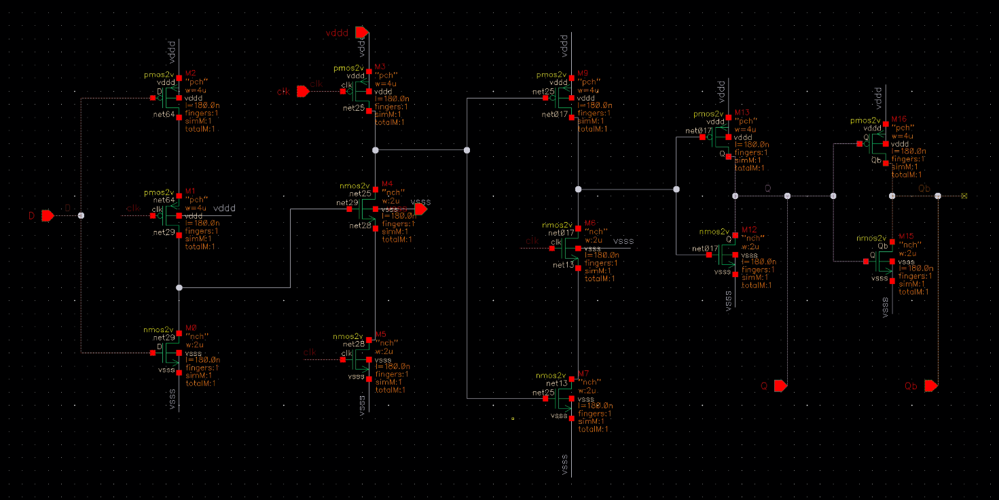
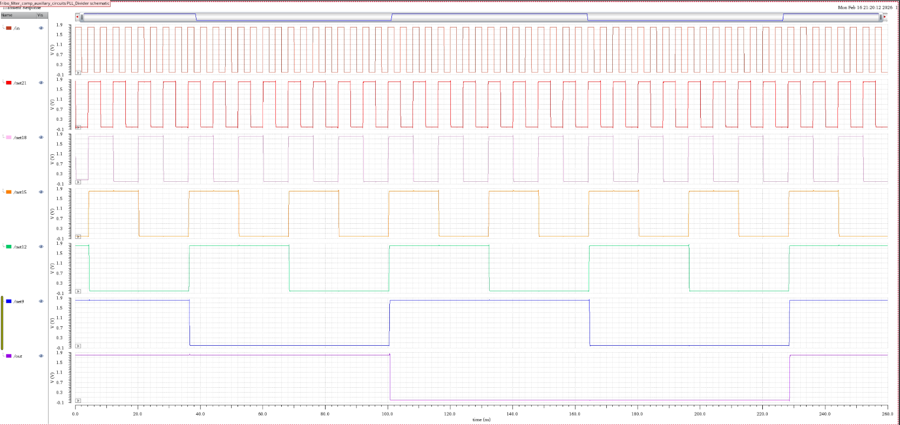
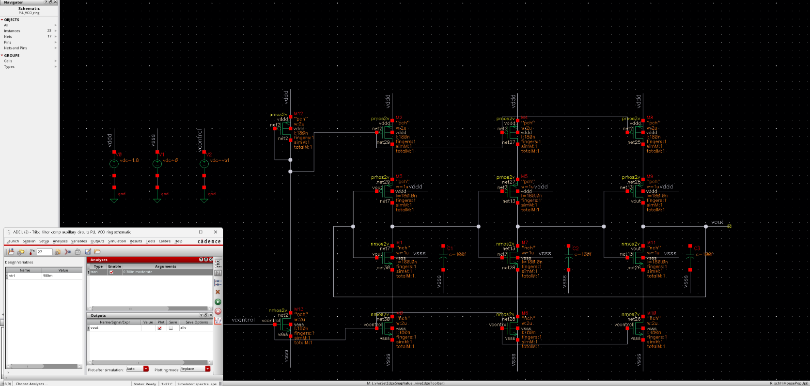
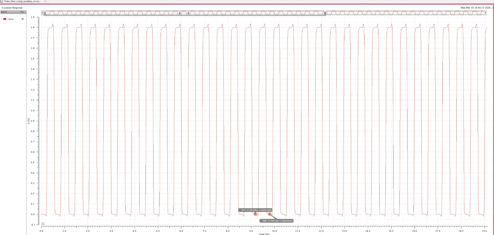
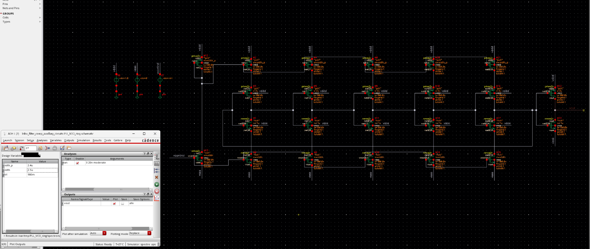

Phase Locked Loop (PLL)
This page is my own PLL project presentation using my simulation captures.
It highlights my implementation details, block-level results, and final lock behavior.
Technology: 180nm
Reference Input: 30 MHz
VCO Output: ~1.9 GHz
Project Overview
My version with personal screenshots and notes
PLL in one line: compare phase, push/pull control voltage, tune VCO, divide back, repeat until lock.
Input reference is 30 MHz, VCO runs around 1.9 GHz, and divider feedback is brought back to 30 MHz for phase/frequency comparison.
Screenshot structure: each block is shown as Schematic -> Testbench -> Waveform so design intent and behavior stay side by side.
PFD
Pulse generation and reset timing
Intuition: PFD tells who is early (ref or feedback) and converts timing error into UP/DOWN pulses.
Up/down pulse behavior was fixed by increasing gate drive sizing, which improved reset speed in the full combined PFD path.

PFD SchematicCore phase detector implementation

PFD TestbenchStimulus for phase lead/lag cases

PFD WaveformUP pulse generated at alignment event
Charge Pump
Current steering with op-amp support
Intuition: UP/DOWN pulses are converted into small charge/discharge actions that move control voltage in the needed direction.
Op-amp polarity and feedback routing follow the same negative-feedback convention used in my LDO work.

Charge Pump SchematicMain current mirror and switching path

Op-amp Sub-blockSingle-stage op-amp used inside charge pump

Charge Pump OutputResponse under UP/DOWN events
Divider
DFF and TSPC-based stages
Intuition: divider scales high-frequency VCO output down to reference range so phase comparison is meaningful.

DFF SchematicCore frequency division element

TSPC SchematicDynamic latch stage used in divider chain

Divider WaveformOutput aligned to required feedback frequency
VCO Ring
Iteration-based design refinement
Intuition: VCO turns control voltage into oscillation frequency; higher control shifts delay and output frequency.
Since startup circuitry is not included, simulator convergence settings and initial conditions were important for oscillation visibility.

Iteration 1Early-stage topology and bias behavior

Iteration 3 WaveformOscillation progression during tuning

Iteration 5 FinalFinalized VCO stage for full-loop integration
Whole System
Final loop behavior
Intuition: once loop settles, divider feedback matches reference in both frequency and phase.

Top-Level SchematicPFD + CP + VCO + Divider integration
.png)
Final Output ZoomedFrequency and phase match observed
.png)
Final Output Zoomed 2Additional lock evidence